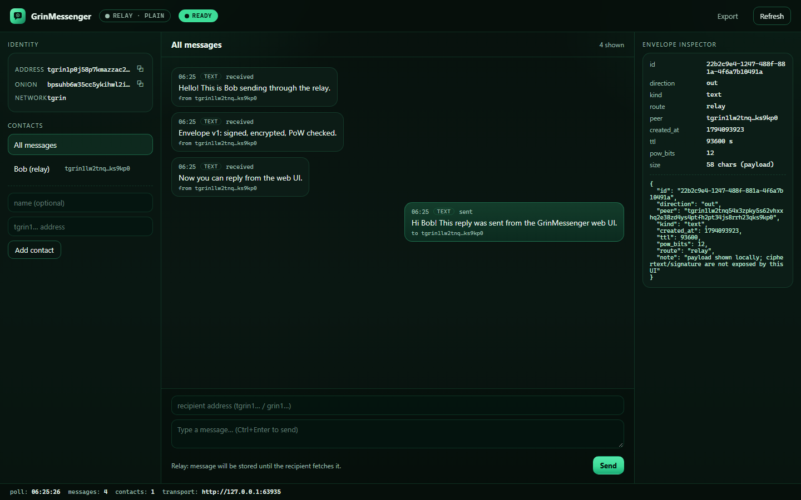
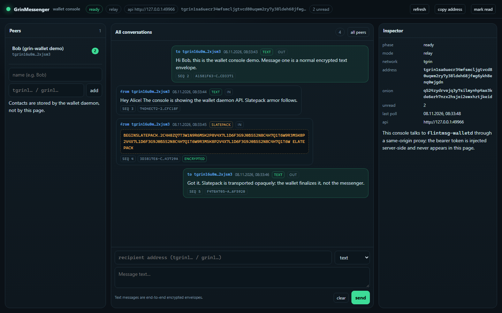

Available for testing
Build & tests
Offline build and the Rust test suite pass: 154 passed, 0 failed, 2 ignored (including the web-UI, wallet two-daemon and security-guard tests).
cargo test --workspace · Windows x64 MSVC
Rust · Tor v3 · in-process Arti
GrinMessenger is a standalone messaging module for Grin (Mimblewimble): signed and encrypted envelopes delivered directly to a Tor v3 onion by in-process Arti — or through an optional store-and-forward relay. No wallet, no Grin node, no RPC and no GUI: it is the messaging layer a Grin wallet integrates.
direct onion in-process Arti relay optional wallet sidecar v1: no forward secrecy not audited
DEV/testnet tool, not audited. Live Tor was verified on a Google Cloud VM with two real processes; the local build sandbox has no Tor egress.
Available for testing
Offline build and the Rust test suite pass: 154 passed, 0 failed, 2 ignored (including the web-UI, wallet two-daemon and security-guard tests).
cargo test --workspace · Windows x64 MSVC
Tor verified on GCP
Recipient publishes an onion through in-process Arti; peers must be online. Live two-process delivery verified on a GCP VM (2026-11-08); first bootstrap takes 30–150 s.
flintmsg serve · flintmsg send · evidence log in repo
Works without Tor
Store-and-forward relay with TTL, quotas, PoW and signed recipient ACKs.
flint-relay · --plain for loopback tests
Features
X25519 ephemeral DH, HKDF-SHA256, ChaCha20-Poly1305 and an ed25519 sender signature over a domain-separated transcript. The relay is not trusted for authenticity: the recipient verifies after decryption.
The identity is a 32-byte ed25519 seed: the bech32 slatepack address and the Tor v3 onion are derived from it. No separate identity, directory or onion registration is needed.
The onion service and outbound HTTP run inside the process through
Arti 0.43 — no tor.exe, no Tor Expert Bundle, no external
SOCKS daemon. Bridge lines remain configurable.
flint-relay stores only opaque envelopes: TTL, per-recipient
and global quotas, rate limiting, proof of work, signed ACKs. No wallet
endpoint is reachable through it.
flintmsg keygen / address / serve / send / fetch for a
real two-peer exchange; the library exposes envelope, store, history,
contacts and an HttpConnector extension point.
flintmsg-ui serves one embedded page over loopback: chat,
contacts and an envelope inspector (id, TTL, PoW bits, route, size).
No Node.js, no WebView2, no new dependencies; the Rust process is a
few megabytes and the browser is only the renderer.
flint-messenger-wallet embeds in a Rust wallet or runs as
the flintmsg-walletd loopback sidecar for C++/Qt wallets:
derived messaging identity, encrypted history/contacts, unread counters
and a long-poll event API. Slatepack armor is transported opaquely.
No groups, attachments or ratchet; no forward secrecy yet; no offline guarantees in direct mode. These are stated limits, not hidden surprises.
Protocol
The wire format is preserved from Flint messenger v1 and covered by fixed test vectors. Full contract: docs/PROTOCOL.md.
| Envelope field | Meaning |
|---|---|
version | u8, currently 1 |
id | UUID, delivery and ACK identifier |
recipient | bech32 address of the recipient |
created_at / ttl | Unix seconds / lifetime in seconds |
ephemeral_key | 32-byte X25519 public key of the sender |
nonce / ciphertext | ChaCha20-Poly1305 message |
pow_nonce / pow_bits | Proof of work (0 for legacy envelopes) |
signature | 64-byte ed25519 sender signature |
POST /flint/v1/msg {id,to,payload,ttl_secs}
GET /flint/v1/msg?to=… messages (opaque payloads)
POST /flint/v1/msg/<id>/ack signed recipient ACK
GET /flint/v1/health {ok:true}
At-least-once delivery; the same signed envelope is retried with the same id. TTL is enforced twice: by the mailbox and by the recipient.
seed ──SHA-512──► X25519 scalar ──DH──► HKDF-SHA256
──► ChaCha20-Poly1305 (AAD binds header)
──► ed25519 signature (transcript)
──► SHA-256 PoW (spam limit only)
No custom cryptography: ready-made, reviewed libraries only. PoW is spam control, not proof of identity.
Transports
http://<onion>.onion/flint/v1/msg.flint-relay stores opaque envelopes until TTL (default 26 h, max 7 days)..onion or plain loopback for tests.No silent fallback: the transport is an explicit choice. Direct delivery is peer-to-peer; relay delivery trades metadata for store-and-forward.
Web UI
The UI is a thin shell over the same library: one Rust process serves the page and a JSON API on loopback. It never adds a web backend, a browser engine or a Node.js runtime to the project.

Chat, contacts and a per-message envelope inspector: id,
ttl, pow_bits, transport route and payload
size. The page also exports the transcript as JSON and shows the honest
transport state (tor / ready /
error) and never hides the transport state.
flintmsg-ui --data ui-data \ --relay http://127.0.0.1:8080 --plain # prints UI_URL=http://127.0.0.1:PORT/#token=… — open that URL # direct mode (needs the Tor network): flintmsg-ui --data ui-data
Loopback only. The URL fragment contains a per-start session token;
/api/* requires it in X-Flint-UI-Token, the
Host header must be an exact loopback name, and a present
Origin must be same-origin (DNS-rebinding/CSRF guard).
history.json and contacts.json are owner-only
files; the identity is created on first start.
Wallet integration
Wallet code owns the seed and the transaction logic; GrinMessenger only transports envelopes and encrypted Slatepack armor. Rust wallets embed the typed service; C++/Qt wallets (Grin++) run the loopback sidecar with a bearer token. Contract: docs/WALLET_INTEGRATION.md.
bech32(ed25519) format as a Grin slatepack addressmessage, rejected, error) and a monotonic seq# sidecar for a wallet (relay mode, loopback only)
flintmsg-walletd --data wallet-data\messenger \
--seed-file wallet-data\messenger-seed.hex \
--network tgrin \
--relay http://127.0.0.1:8080 --plain \
--listen 127.0.0.1:0
# prints {"event":"ready","api":"http://127.0.0.1:…",
# "token_file":"…","address":"tgrin1…"}
curl -H "Authorization: Bearer <token>" \
http://127.0.0.1:PORT/v1/status
Every endpoint except /v1/health needs the bearer token;
non-loopback binds are refused. API: status, identity, capabilities,
contacts, messages, events, unread, send (text/slatepack), read.

flintmsg-wallet-ui) over the
sidecar API: token injected server-side, Host/Origin guarded, text and
opaque Slatepack messages.
flintmsg-wallet-ui \
--api http://127.0.0.1:<walletd-port> \
--token-file wallet-data\messenger\api-token \
--listen 127.0.0.1:0
# prints {"event":"ready","url":"http://127.0.0.1:PORT/"}
Read-only token injection: the browser never sees the daemon token. Details: wallet contract and security notes.
Quick start
git clone https://github.com/DanilaGrinRus/GrinMessenger cd GrinMessenger cargo build --workspace cargo test --workspace
Rust MSVC, rust-version = "1.92".
The project builds offline with a vendor directory; on a normal machine
dependencies are fetched from crates.io.
flintmsg keygen --out alice.json flintmsg keygen --out bob.json flintmsg address --identity bob.json flintmsg serve --identity bob.json --data bob-data flintmsg send --identity alice.json \ --to <bob address> --text "hello over arti"
serve prints JSON lines; each message is
acknowledged with a signed ACK after printing.
flint-relay --listen 127.0.0.1:8080 --store relay-store flintmsg send --identity alice.json \ --to <bob address> --text "hi" \ --relay http://127.0.0.1:8080 --plain flintmsg fetch --identity bob.json \ --source http://127.0.0.1:8080 --plain
--plain disables Tor for loopback/clearnet
tests; without it the CLI goes through Arti and supports
.onion relays.
flintmsg-ui --data ui-data \ --relay http://127.0.0.1:8080 --plain # open the printed UI_URL in a browser # or, with Tor available, direct onion: flintmsg-ui --data ui-data
Chat + contacts + envelope inspector; no authentication, loopback only. Works without Tor in relay mode.
flintmsg-walletd --data wallet-data\messenger \ --seed-file wallet-data\messenger-seed.hex \ --network tgrin --relay http://127.0.0.1:8080 --plain \ --listen 127.0.0.1:0
Reads the printed API URL and token file, then talks
/v1 JSON over loopback. Rust wallets can call
WalletService directly instead.
use flint_messenger::{Identity, MessageKind, Messenger};
use flint_messenger::transport::GatewayTransport;
let id = Identity::from_seed(seed, "tgrin")?;
let msg = Messenger::new(
GatewayTransport::new("http://127.0.0.1:8080")?);
let env = msg.send(&id, &recipient,
MessageKind::Text { text: "hi".into() },
DEFAULT_TTL_SECS)?;
For Arti delivery, implement
HttpConnector over TorHttpClient (the CLI does
exactly that).
Development honesty
flintmsg-walletd processes exchange text + encrypted Slatepack through a real relay; console proxy testedflint-relay process
Reports, logs and hashes live in the repository under
evidence/20261107-extraction/. The extraction report and the
independent verifier report are kept in Russian as historical artifacts;
SUMMARY.md
provides the English overview.
Repository
Rust workspace: six crates, pinned Cargo.lock, no vendor
binaries in git.
Protocol, architecture, wallet integration contract, provenance, third-party notices and build instructions.
Build/test logs, loopback E2E transcript, freeze manifest, extraction report and independent verification.